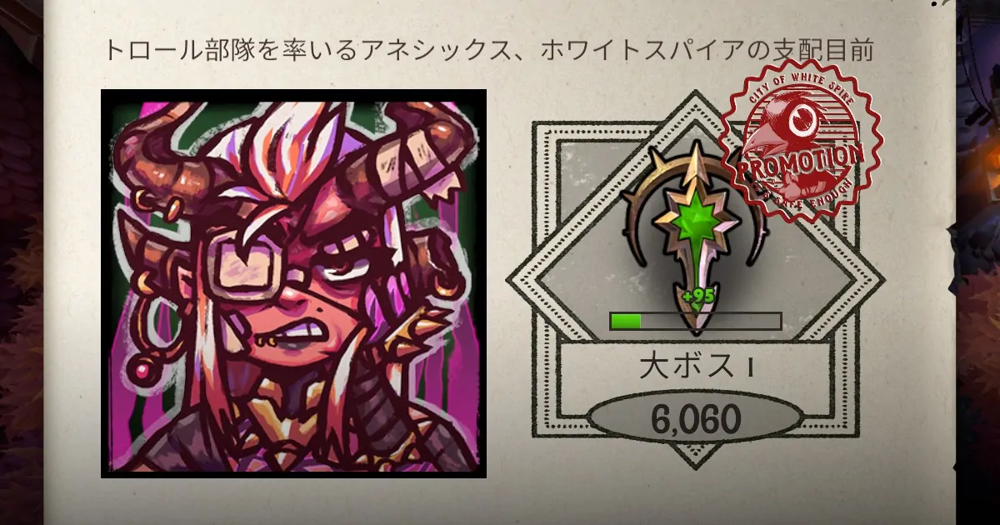
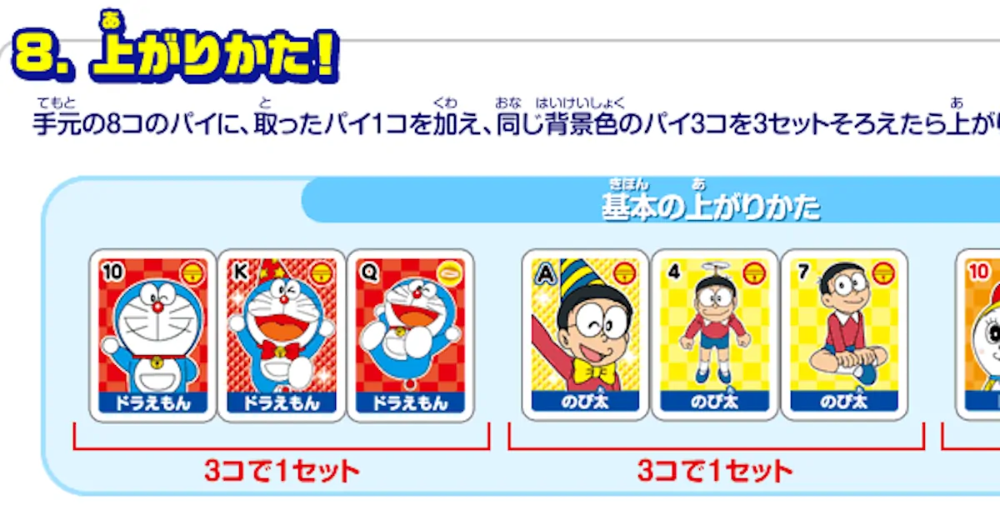
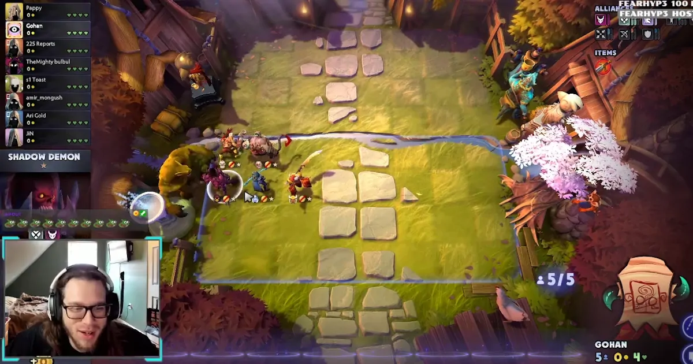
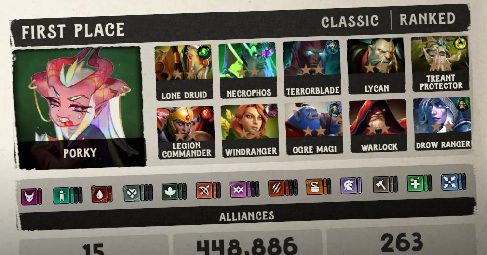

Dota Underlordsの大ボスは誰でもなれる

Dota Underlordsのノックアウトモードで大ボスに到達した。これは自慢できるものかというと疑問符がつく。このゲームはドンジャラと同じで底が浅く覚えることも少ないからだ。
上手くなりたければノックアウトモードでプレイすべきだ。スタンダードでは上達するのに時間がかかる。それにゴールド管理がそもそも不要だ。どのような要素を継ぎ足したとしてもドンジャラであることに変わりはない。絵合わせという単純な要素だけを短時間で遊べるのがノックアウトだ。

天鳳という麻雀のサイトがある。そこで数千試合したが上級卓より上には進めなかった。上には特上と鳳凰がある。Dota Underlordsは確実に麻雀以下だ。単純で勝ち筋が見つけやすい。麻雀は複雑で自分の押し引きが正解なのかすら判然としない。
大ボスになるには序盤の2ラウンドで連続して負けてはいけない。ノックアウトは体力が4しかないのだから当たり前の話だ。2つ落としたら7位以下にリーチだ。これではランクを上げることは不可能。だから序盤を落とさないように工夫する。
たとえば後半に6が揃ってようやく強くなるようなアライアンスは選ばない。シーズン1だとメイジや暗殺者はスルーだ。スピリットはストームスピリットとエンバースピリットがメイジと暗殺なので注意が必要だ。スピリットの3体が重ならず育たない場合に逃げ場がない。もう一つは星2を作ることだ。構成にこだわってはいけない。流れてきたゴミを集めて手早く星2を作り即席で構成を考える。はじめに思い描いていた通りにいかないのが歯がゆいが頭の体操だと割り切るべきだ。

強い構成を知ることも大事だ。勉強するのは簡単で上級者の配信を視聴するだけだ。英語はわからなくても問題ない。ドンジャラは解説なしに見るだけで理解できる。弱い構成では絶対に1位は取れない。だから構成に注目する。アイテムやポジションはどうでもよい。構成を知るというのは最終形を記憶するということではない。ピンフやタンヤオを覚えるだけでは意味がないのと一緒だ。複数の変化をどのように選択しているのか頭に入れる必要がある。他人のプレイは退屈なので勝てなくて行き詰まったら見るとよい。
スピリットとメイジの構成を紹介している。ヴォイドを後半に付け足す。ノックアウトではあまり見ない。最終形を知るだけならredditで情報を集めた方が早い。それよりも早いのは試合で勝ち残った構成をじっくり眺めることだ。

このような構成に釣られてはいけない。チャンピョンや屈強などの育てば強い系は成績が安定しない。お手軽で強い構成の変化を頭に入れてその場しのぎで早めに星2を作る。これだけで大ボスに誰でもなれる。